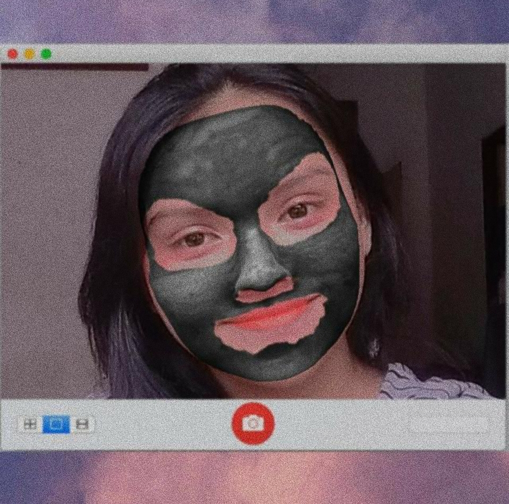
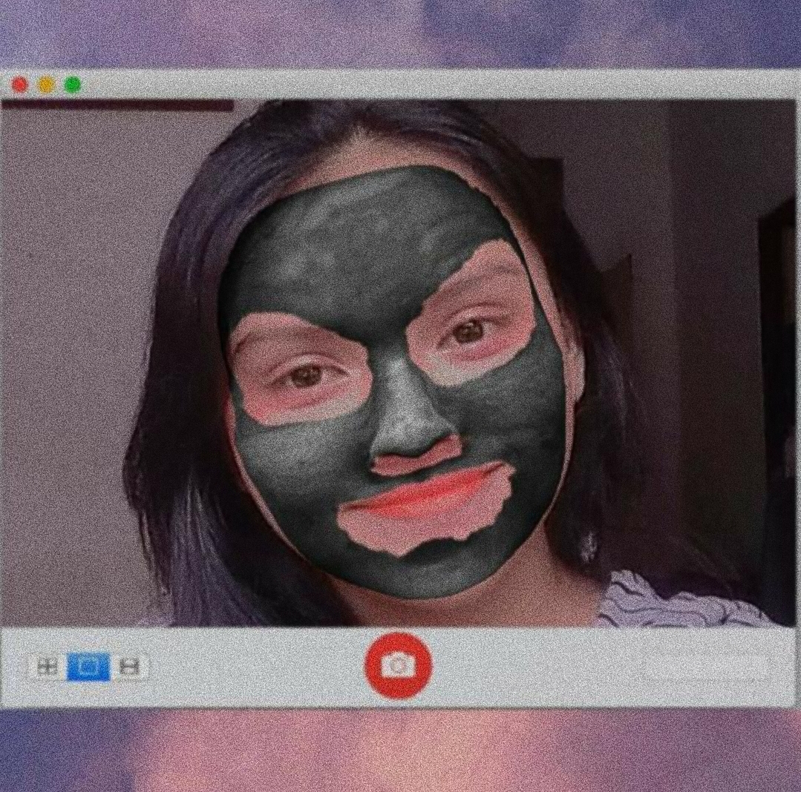

moment di gunung
Ni Luh Joecika Setiana
Putri Pertama dari
Bapak Joni & Ibu Ayu
Banjar Pande, Ds. Sumerta Kaja, Denpasar Bali
moment di gunung
Putri Pertama dari
Bapak Joni & Ibu Ayu
Banjar Pande, Ds. Sumerta Kaja, Denpasar Bali
Biografi Singkat
hmmm. apa ya.. Warespati Prangbakat 11 November 2004. Tepat itu seorang bayi kecil lahir ke dunia. Namanya cika, udah itu aja kayak nya. Seiring berjalannya waktu anak tersebut tumbuh besar hingga mencapai umur yang pas untuk menempuh sekolah taman kanak kanak(TK), Kemudian melanjutkan pendidikan di sekolah dasar(SD) SD 8 sumerta tepatnya dauh umah. Lanjut ke sekolah menengah pertama(SMP) SMP PGRI 2 Denpsar. Dan sekarang sekolah menengah atas(SMA) SMA Negeri 3 Denpasar.

moment di kebun strawberry
Kegemaran & Kesukaan
moment gogo & komo
Gogo & Komo. Dua makhluk hidup yang tidak bisa di pisahkan. Tapi cika orangnya pilih kasih masak cuman gogo di kasik perhatian lebih. Contoh kalau lagi mood dimanjain gogo. Tapi kalau lagi aneh malahan di marahin. Tapi ketika gogo hilang di cariin.. anjing nya, kan mantep :) "EXO" grup band musik asal korea dengan talent nya Kim Jong-in(Kai) yang membuat cika menjadi gila. Hari hari nya kalau ada kuota pasti kpop. Mau ngerti atau engga maksud dari penyanyinya bodo amat yang penting nonton. Dan satu lagi warna kesukaan kayaknya unggu deh, tapi kalok salah benerin sendiri aja jangan manja.
Prestasi & Pencapaian

moment pengukuhan anggota paskibraka
Tapi di balik semua itu. Cika adalah sosok perempuan yang tangguh, Pembuktian nyata ketika 17 Agustus 2021 adalah hari dimana kerja kersanya terbayarkan sudah dengan mampu berkibarnya bendera di lapangan kantor walikota denpasar.
Foto & Video


 
